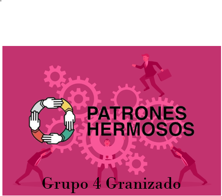

Por una clase trabajadora organizada en Sindicatos
“La sed de conocimientos que demuestra la clase obrera es una de las manifestaciones culturales más notables de la lucha de clases contemporánea. En un sentido moral, la lucha de la clase obrera es también un índice de la renovación cultural de la sociedad.”, Rosa Luxemburgo.
